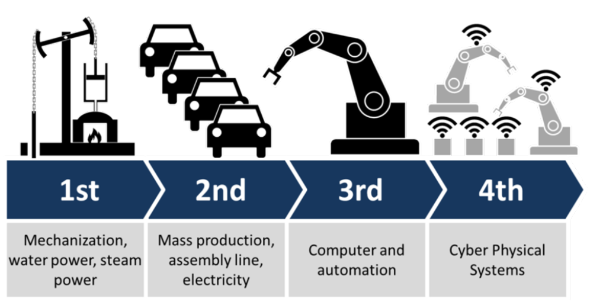
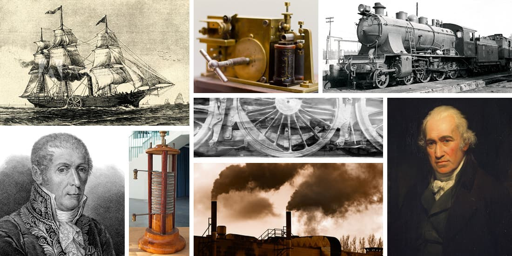
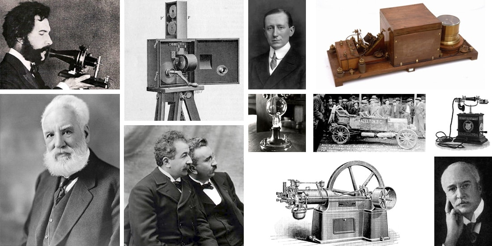
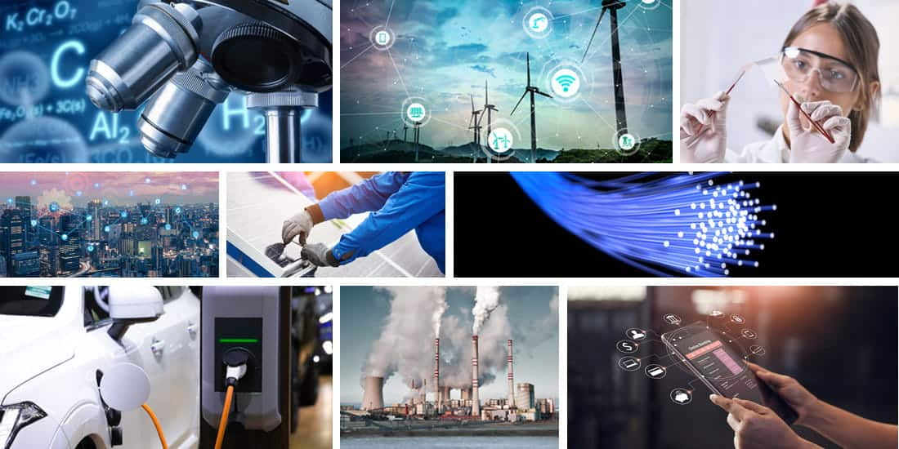

¿Qué es una revolución industrial?
Es un proceso de transformación económica y social. El cual es provocado por el uso de nuevas tecnológias y fuentes de energía. Cuando suceden se marca un punto de inflexión histórico e influencian todos los aspectos de la vida, principalmente se alteran las formas conocidos de trabajo y esto ocasiona que cuando suceden, encuentren oposición al principio.
¿Cuáles son las 4 revoluciones industriales?
 The 4 Industrial Revolutions (by Christoph Roser at AllAboutLean.com)Como se puede observar en la imagen, la primer revolución idustrial corresponde a la mecanización de trabajos utilizando la potencia del agua mediante máquinas de vapor, usando como principal combustible el carbón. Para la segunda revolución industrial se desarrolla la producción en masa, usando como concepto la línea de ensamble mediante, ademñas, se aprovecha el uso de la electricidad. Con la tercera revolución industrial se inicia con la automatización de los procesos por medio de la computación. Finalmente, se llega la actual revolución insdustrial, denominada revolución 4.0
Primera revolución industrial
Se dio entre 1750 y 1830 en Reino Unido y Europa, teniendo como principal representante la maquina de vapor. Las industrias predominantes fueron los textiles y el hierro, aunque también hubo mejoras significativas en el transporte, la comunicación y los bancos. Esta revolución industrial tuvo un efecto notable el cual fue que la vida se trasladara de la zona rural a la zona urbana, cambiando las formas de trabajo y cambios en la expectativa de vida.
 Primera revolución industrial
Segunda revolución industrial
Se dio entre 1750 y 1830, en esta etapa, entran mas paises en escena, si bien en la primera solo era Reino Unido el principal exponente, para esta revolución los principales paises fueron EE.UU, Inglaterra, Alemania y Japón. Los principales disparadores fuerón las nuevas fuentes de energía (Petróleo Y electricidad) , en la industria metalúrgica, nuevos materiales y sistemas de producción son incorporados (acero, aluminio, níquel), en la industria química (Principalmente petroquímica y sintética) se implementa un nuevo sistema industrial y fabril (electrificación y motorización, sistema de producción basado en fordismo y taylorismo, incorporación de la ciencia y a la industria).
Los impactos sociales fueron más notorios en esta revolución, al masificarse el transporte con una máquina de vapor mejorada. También el crecimiento demográfico fue mayor al tener nuevos controles en las plagas. Es de destacar que se generan nuevas formas de que al generarse nuevas formas de trabajar nacen los sindicatos debido a la explotación de la industria y la condición precarias de los trabajadores. Se considera que en esta etapa nace la sociedad del consumo gracias al uso de la electricidad.
La mayoría de empresas que conocemos hoy en día nacieron en esta época, debido a los diferentes inventos realizados en la época. Destacan, el teléfono, la bombilla, el motor de combustión, el automóvil, el cine, la radio, la invención de la aspirina, el avión, la teoría de conversión de los alimentos, entre otros.La mayoría de empresas que conocemos hoy en día nacieron en esta época, debido a los diferentes inventos realizados en la época. Destacan, el teléfono, la bombilla, el motor de combustión, el automóvil, el cine, la radio, la invención de la aspirina, el avión, la teoría de conversión de los alimentos, entre otros.
 Segunda revolución industrial
Tercera revolución industrial
Se dio entre 1970 y 2010 teniendo de representante a diferentes países de Europa, a EEUU y a Japón. Se destaca, la transición o evolución de la tecnología analógica, mecánica y electrónica a la tecnología digital. aparecen las nuevas fuentes de generación de energía renovable, inicia la era de la información. Aparece el computador personal, el celular y el Internet, además, se masifica la automatización de la producción.
 Tercera revolución industrial
Cuarta revolución industrial o industría 4.0
Se considera su inicio en el año 2010, el término industria 4.0 fue introducido por el gobierno alemán para referirse a la nueva industria que está cada vez más conectado. Las máquinas están conectadas con los sistemas y a su vez con las personas. Gestionando las compañías de una manera diferente, Las principales tecnologías presentes en esta revolución son el internet de las cosas (IOT, por sus siglas en ingles). Se crean robots para interactuar con el humano. Realidad aumentada y realidad virtual que busca enriquecer la experiencia de las personas. Big Data y Analitycs con las que las compañías pueden aprovechar sus datos y usarlos para tomar decisiones. Las impresoras 3D que han revolucionado la manera en que se imprimen objetos de manera tridimensional. Por último, los sistemas ciber-físicos permiten que las máquinas estén controladas por tecnologías o sistemas.